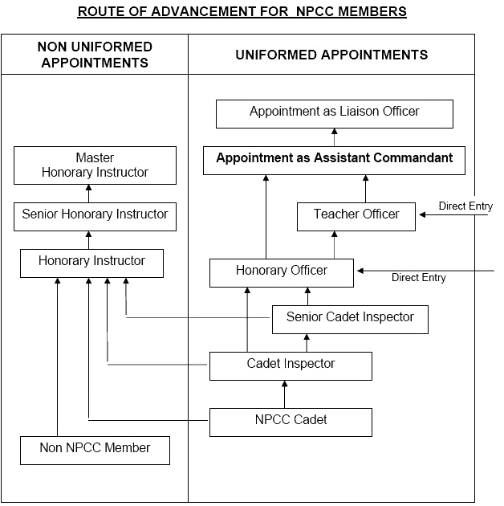
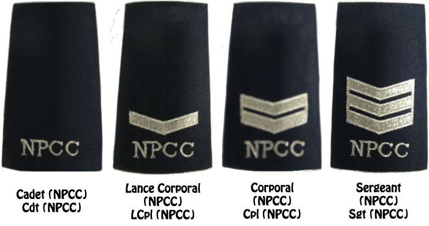
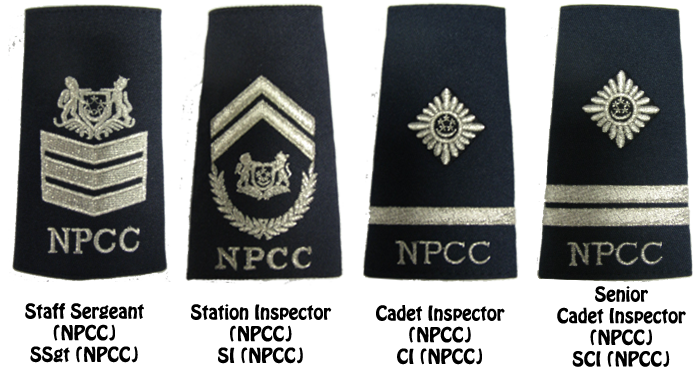

Advancements
| The objectives of awarding proficiency badges to cadets are: To sustain the cadets' interest in the Corps and to instil in them the sense of striving to do well. To show recognition of cadets' achievements. To encourage cadets to participate in more healthy activities. |
|---|
| No | Membership | Rank Structure | Description |
|---|---|---|---|
| a | Cadet | Cadet - Station Inspector |
Secondary 1 to Secondary 4/5 students in government secondary schools. |
| b | Cadet Inspector |
Cadet Inspector - Senior Cadet Inspector |
Former cadets appointed and trained to become youth leaders. |
| c | Teacher Officer |
Inspector - Deputy Superintendent |
School teachers appointed and train to become adult leaders. |
| d | Honorary Officer |
Inspector - Deputy Superintendent |
Tertiary students and former Cadet Inspectors or former cadets with prerequisite education qualifications appointed and trained to become adult leaders. |
| e | Honorary Instructor |
Non Uniformed | Former cadets or members of public with special skills appointed as adult leaders. |
|
In general, an NPCC member can serve the Corps till the official retirement
age of 62. Depending on his background, education qualifications and contributions,
an NPCC member could move up the ranks from cadet to Assistant Commandant,
which (at this point) is the highest attainable appointment for an NPCC
member.
A former Assistant Commandant who had reached the official retirement age of 62 and would like to continue active service with the Corps could be appointed as Liaison Officer. Appointment to Liaison Officer is by invitation only. A member of public with no NPCC background could also join the NPCC as a non-uniformed member. The route of advancement for NPCC members is delineated as follows: |
|---|

NPCC Rank Structure
Cadets
